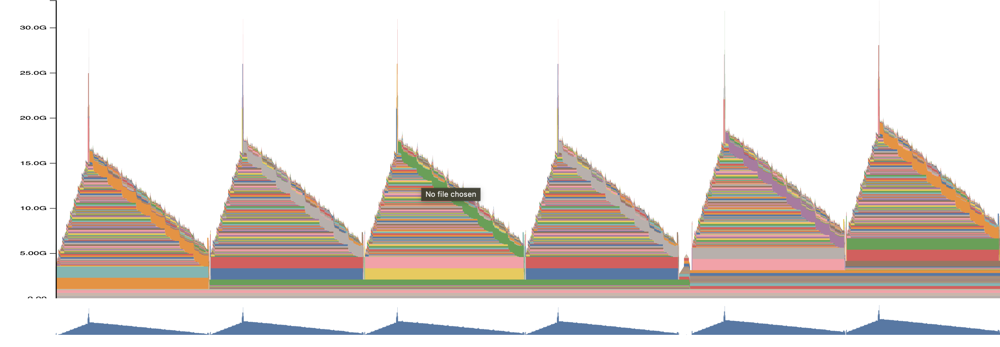
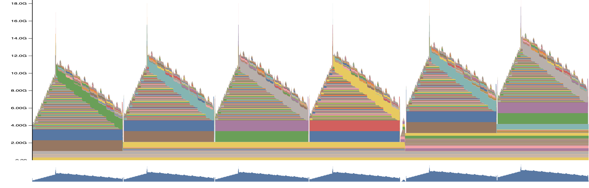

Context Parallelism
Context Parallelism (CP) is a distributed training technique that enables training of LLMs with extremely long sequences (up to 1M tokens) by sharding the sequence dimension across multiple GPUs. This post traces the implementation from device mesh setup through the actual parallelization mechanics.
Device Mesh & Rank Layout
The key insight about CP is that it reduces your effective data parallelism. Why? Because the same batch of data needs to be processed by all GPUs in the CP group - they each handle a different sequence chunk of that same data. For an 8 GPU setup with CP=2, your effective DP becomes 4 - you’re processing 4 unique batches, not 8.
Visualizing CP vs Pure Data Parallelism
Pure Data Parallel (8 GPUs):
GPU 0: Batch_0 [B, seq_len, D] → Linear → Output_0
GPU 1: Batch_1 [B, seq_len, D] → Linear → Output_1
...
GPU 7: Batch_7 [B, seq_len, D] → Linear → Output_7
Total: 8 different batches processed simultaneously
With CP=2, DP=4 (8 GPUs):
GPU 0: Batch_0 [B, seq/2 (first half), D] → Linear → Output_0_partial
GPU 1: Batch_0 [B, seq/2 (second half), D] → Linear → Output_0_partial
GPU 2: Batch_1 [B, seq/2 (first half), D] → Linear → Output_1_partial
GPU 3: Batch_1 [B, seq/2 (second half), D] → Linear → Output_1_partial
...
Total: Only 4 different batches processed (each split across 2 GPUs)The Mesh Setup
device_mesh = init_device_mesh(
"cuda",
(args.dp_size, args.cp_size), # (4, 2) for 8 GPUs
mesh_dim_names=("dp_shard", "cp"),
)
# Flatten to create FSDP mesh - this is critical
device_mesh[("dp_shard", "cp")]._flatten(mesh_dim_name="dp")
dp_mesh = device_mesh["dp_shard"] # size = 4 -> for data loading
row_mesh = device_mesh["dp"] # size = 8 -> for FSDP all-reduce
col_mesh = device_mesh["cp"] # size = 2 -> for CP operationsThe crucial point: FSDP still needs to operate across all 8 ranks for gradient synchronization. Even though CP splits sequences within groups of 2, the model weights need to be synchronized across all 8 GPUs. That’s why we create the flattened “dp” mesh with size 8.
Without FSDP operating on all ranks, you’d essentially train 4 independent model replicas (one per DP group), which would never converge properly. In other words, in CP the weights are replicated across the CP group (similar to DP). Each rank computes gradients for the same weights but using different sequence positions, hence needing gradient synchronization.
Context Parallel in Practice
The context_parallel context applies Ring Attention to all attention layers. freqs_cis is sharded along the position axis.
@monitor
def training_step(x, y, i):
ctx = nullcontext()
if args.use_cp:
ctx = context_parallel(
col_mesh,
buffers=[x, y, model.freqs_cis], # Shard these tensors
buffer_seq_dims=[1, 1, 0], # Along sequence dimension
no_restore_buffers={x, y}, # Don't unshard after forward
)
with ctx:
logits = model(x)
# All SDPA calls now use Ring AttentionHow Context Parallel Works Under the Hood
Two-Level Replacement
Level 1: Python Function Wrapper
distribute_function is singleton-based. Once called, ALL SDPA calls use Ring Attention:
# Input: tensors → DTensors with Shard(seq_dim)
def attention_input_fn(mesh, *args, **kwargs):
placement = [Shard(seq_dim)]
# Convert all tensor args to DTensors
# Output: DTensors → local tensors
def attention_output_fn(mesh, outputs):
return output.to_local() if isinstance(output, DTensor) else output
# Replace THE function object globally
wrapper_fn = wrapper(fn, attention_input_fn, attention_output_fn)
setattr(F, 'scaled_dot_product_attention', wrapper_fn)Level 2: ATEN Dispatch
Regular Flash Attention: computes on local sequence only.
Ring Flash Attention: adds KV rotation between ranks.
# Ring Attention (simplified)
def ring_flash_attention(q_local, k_local, v_local):
output = flash_attention(q_local, k_local, v_local)
# Rotate KV chunks from other ranks
for k_chunk, v_chunk in rotate_kv_chunks():
partial = flash_attention(q_local, k_chunk, v_chunk)
output = merge_attention_outputs(output, partial) # log-sum-exp
return outputExecution Flow
F.scaled_dot_product_attention(q, k, v, is_causal=True)
↓
wrapper_fn(q, k, v) # Level 1
↓
attention_input_fn: converts to DTensor with Shard(seq_dim)
↓
DTensor dispatcher finds Ring Attention in call_maps # Level 2
↓
_scaled_dot_product_ring_flash_attention executes
↓
attention_output_fn: converts back to local tensorLevel 1: tensor conversion and orchestration
Level 2: swaps CUDA kernel to Ring Attention variant
Memory
 